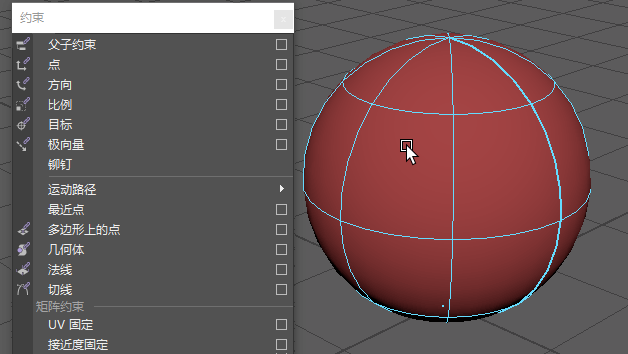

尽管 proximityPin 和 uvPin 都是程序节点且执行类似功能，不过它们存在细微但重要的区别：
“UV 固定”(UV Pin)不需要矩阵输入或定位器，因为它基于 UV 坐标。

将 uvPin 与 NURBS 结合使用
从组件创建 uvPin 节点
- 选择以下内容：
- 对于网格：顶点、边、面或 UV
- 对于 NURBS：曲面点或曲面面片。
- 在“动画”(Animation)(F4) 或“绑定”(Rigging)(F3) 菜单集中选择“约束 > UV 固定”(Constrain > UV Pin) >
 ，以打开“UV 固定”(UV Pin)选项。
，以打开“UV 固定”(UV Pin)选项。
- 在 UV 选项窗口中，将固定位置设置为“组件”(Components)，然后选择固定的输出方式。有关这些设置的描述，请参见 uvPin 选项。
- 使用“UV 固定”(UV Pin)选项窗口中的“坐标系”(Coordinate System)区域设置从曲面派生坐标系的方式。可以选择世界空间进行求值，以防发生双重变形/变换。请参见“接近度固定”(Proximity Pin)选项
注： 属性编辑器(Attribute Editor)设置更加详细地介绍了这些选项，在使用变形器时这些选项可为您提供更好的控制以调整结果。
- 选择“添加”(Add)或“应用”(Apply)。
- 变换几何体或使几何体变形时，uvPin 会随之移动。